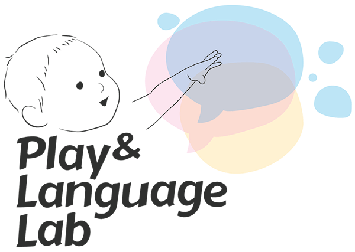
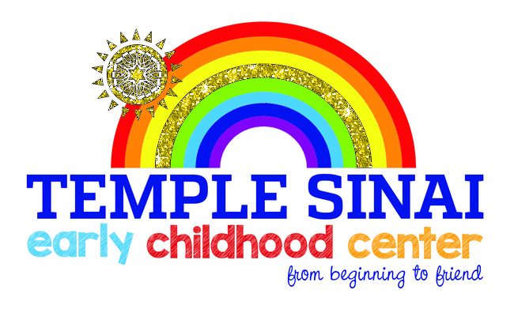
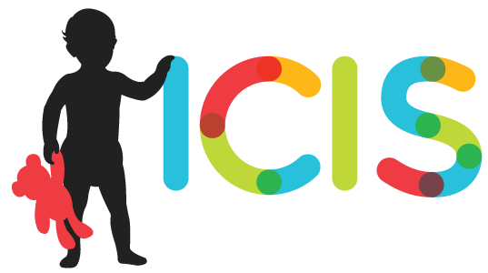
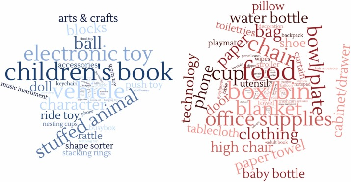
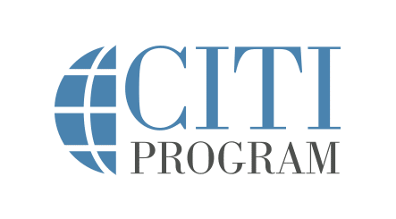

Education
M.A., Developmental Psychology
September 2021 - May 2023 Columbia University, Teachers College, NYC
B.A., Human Development and Family Sciences; Early Child Development and Education
August 2016 - December 2019 University of Connecticut
Professional Experience
Adjunct Professor in Psychology, CUNY New York City College of Technology, Brooklyn NY
August 2024 - Present
- Instructs an introductory psychology course for 38 undergraduate students, covering key psychological theories, research methods, mental disorders, and treatment approaches
- Develops and delivers engaging lectures and course materials to facilitate student understanding of foundational psychology concepts
- Implements interactive teaching techniques to enhance student participation and learning outcomes
- Assesses student performance through exams, assignments, and discussions to foster critical thinking and application of psychological principles.

Data Labelling Analyst at Meta, NY
September 2023 - Present
- Provides data annotations for several large language model projects at Meta with a focus on eliminating AI hallucinations, integrating diverse vocabulary, and screening for relevancy and appropriateness within each response
- Collaborates with software engineers to update data annotation guidelines reflecting latest developments
- Supervises the onboarding process for Data Labeling Analysts by conducting training and shadowing sessions to accelerate their understanding of current projects, expectations, and workflow
- Mentors and audits 10-15 other team members on Facebook Search, providing weekly developmental feedback to ensure quality assurance, maintain 90% accuracy in team outputs, and uphold adherence to product guidelines

Graduate Research Assistant at the Play and Language Lab, New York University
Advisor: Catherine Tamis-Lemonda
September 2020 - July 2023
- Conducted research in early learning in low-income and marginalized toddlers surrounding object-play and math concepts
- Facilitated the preparation of Institutional Review Board (IRB) submissions, ensuring completeness and compliance with ethical standards and regulatory requirements
- Implemented Good Clinical Practice (GCP) and Human Subjects Protection guidelines throughout research projects, ensuring ethical conduct and participant safety
- Presented literature reviews and poster presentations at 2022 Conference of the International Congress for Infant Studies
- Attended weekly lab meetings and provided constructive feedback on the research of PhD and Postdoctoral candidates

Lead Toddler Teacher at Tempai Sinai Early Childhood Center, Roslyn Heights
Toddler Classroom
January 2020 - August 2021
- Delegated tasks and roles to assistant teachers to maintain a positive and low-stress classroom climate
- Guided children through play using developmentally appropriate modeling to promote growth in all learning domains
- Developed weekly curricula based on children’s interests and developmental stages.
- Communicated with families about the children’s overall well-being and development on a daily basis to create a collaborative partnership

Student Teacher at the Child Development Laboratories, University of Connecticut
Infant Classroom and Preschool Classroom
August 2019 - May 2019
- Developed and implemented curricula based on careful observations to provide stimulating and developmentally appropriate Septemexperiences for all children in the classroom using the Connecticut Early Learning and Development Standards
- Collaborated planning ideas, children’s development, and semester-long goals in weekly meetings with Master Teachers
- Organized an event for teachers and families from all classrooms to get to know each other
Human Resources Assistant at the Kitano Hotel, NY
May 2018 - August 2018
- Entrusted with confidential information on employees and hotel development and prepared updates for management meetings
- Conducted job interviews with potential candidates and provided evaluations to the HR Director
- Organized, coordinated, and managed annual summer event to promote engagement of all employees
Publications
Contextual Cues to Everyday Math Language.
Poster accepted at the 2022 Conference of the International Congress for Infant Studies, Ottawa, Canada.

Object Play in the Everyday Home Environment: Learning Opportunities for Hispanic Infants.
Poster accepted at the 2022 Conference of the International Congress for Infant Studies, Ottawa, Canada.

Everyday, Spontaneous Math Talk Among Mothers and Infants at Home.
Poster accepted at the 2022 Conference of the International Congress for Infant Studies, Ottawa, Canada.
Skills and Certifications

Python
SPSS

Tableau

CITI IRB Social & Behavioral Researchers
CITI Human Subjects Research Course in Social/Behavioral Research
GCP – Social and Behavioral Research Best Practices for Clinical Research
About Me
Rachel holds a M.A. in Developmental Psychology and is currently an Adjunct Professor in Psychology at CityTech and a data labelling analyst at Meta.
She is eager to transition her expertise in psychology and data analysis into an industry setting,
where she can apply her strong analytical skills and research background to drive impactful results in real-world applications.